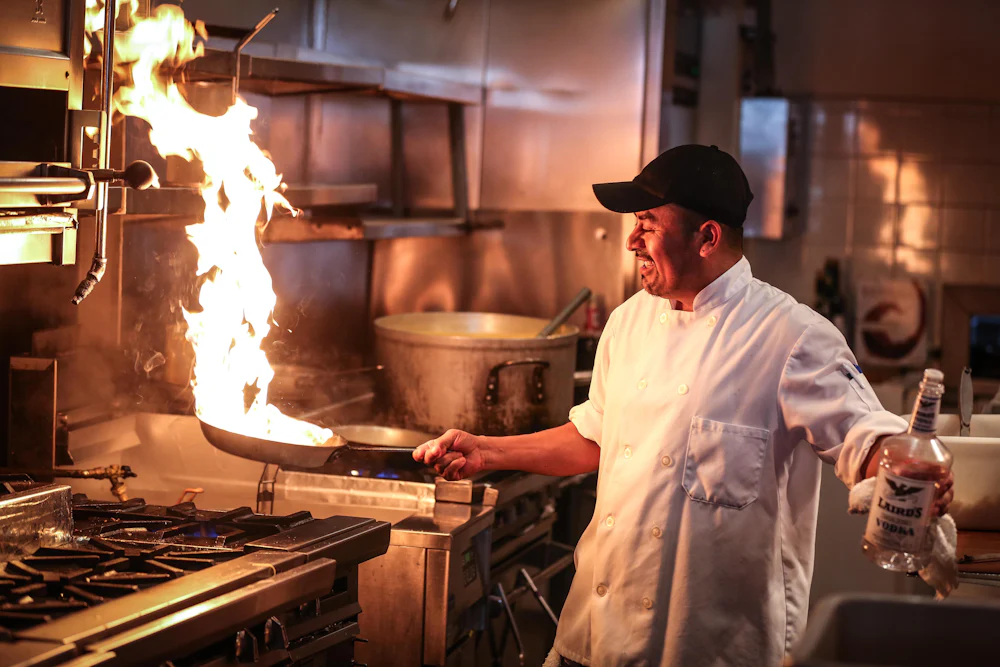

Producto de aquí
Verdura de la vega, pescado de la lonja de Huelva y aceite de la Sierra Sur. Compramos cerca y a quien conocemos.
Inicio / Nosotros
Lo que empezó como un pequeño bar de tapas es hoy el punto de encuentro de todo el barrio.
Nuestra historia
Manuel y Carmen abren un pequeño bar de cinco mesas con la cocina de ella como única carta.
Compramos el local de al lado y descubrimos un patio sevillano que hoy es el alma de las noches de verano.
Su hijo Antonio toma las riendas de la cocina y suma los arroces y la brasa a las recetas de siempre.
Con la tercera generación en sala, seguimos haciendo lo mismo: cocina honesta y gente que se siente en casa.

En la cocina
“Mi madre me enseñó que la cocina no tiene secretos: buen producto, paciencia y cariño. Lo demás lo pone la gente que viene a comer.”
Antonio Olivares
Jefe de cocina desde 2012
Lo que nos mueve
Verdura de la vega, pescado de la lonja de Huelva y aceite de la Sierra Sur. Compramos cerca y a quien conocemos.
El puchero, las croquetas y la salsa brava se hacen igual que en 1987. Algunas cosas no se tocan.
Aquí te llamamos por tu nombre. Si vienes una vez, a la segunda ya sabemos cómo te gusta el café.